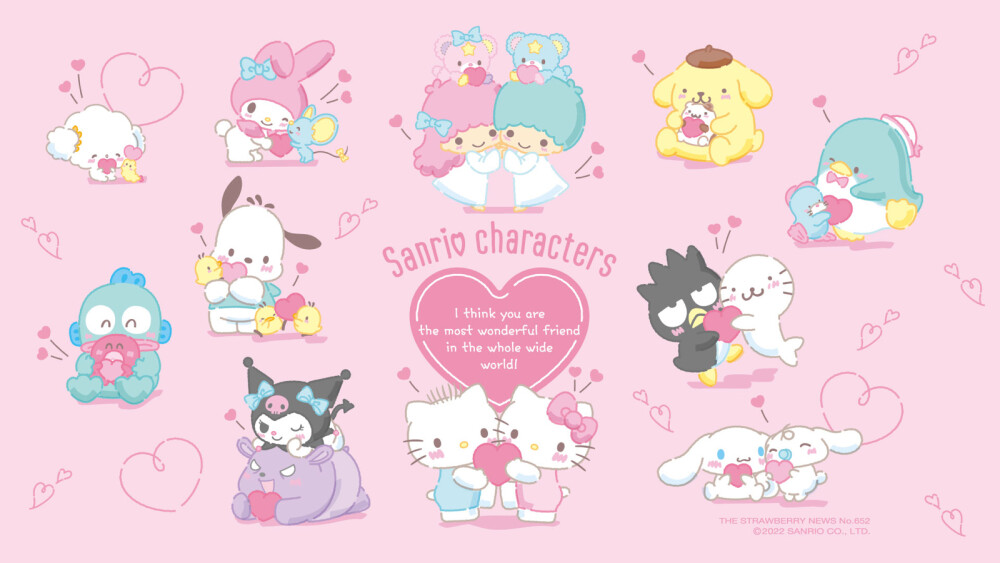
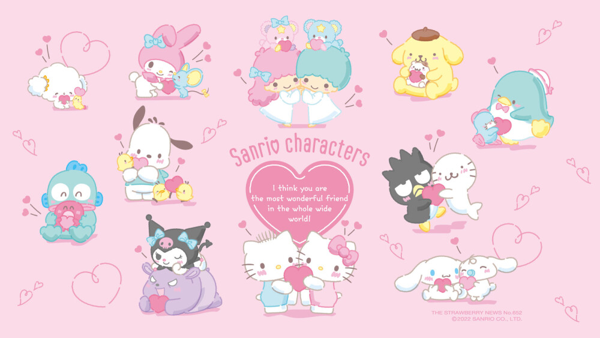

社长寄语
衷心感谢诸位多年来对三丽鸥和三丽鸥家族成员的支持。自公司成立以来，在「みんなnakayoku」这一企业理念的引领下，我们最大的愿望是为人们建立紧密相连的羁绊。
放眼历史，我们的成长归功于各位粉丝长久以来对三丽鸥家族的喜爱与支持。但我们不能墨守成规，而是要持续发展以满足时代的需求。我们将持续探索新的商业模式，在必要时启动体制改革，开发创新业务，并不断努力发展成为一家与时俱进的全球性娱乐企业。
2021年，我们确立了“同一个世界，微笑相连”的新愿景，它源于「人人和睦相处」的企业理念。我们致力于通过不断地为每个人带来笑容，并将幸福的氛围传递给全世界。相信我们带来的娱乐就是实现这一愿景的方式。
世界各地正不断发生变化，一成不变并非上策，在娱乐行业也别无二致。尽管娱乐的本质并未改变，但我们体验娱乐的方式，包括购买行为和用户体验，都在发生巨大的变化。三丽鸥将与时俱进，在产品设计、门店开发、商业授权等方面引领潮流，持续提升粉丝的消费体验。
同时，三丽鸥也将为娱乐赋能，并期待看到下一代人的乐趣与幸福是由大家共创的。作为一家企业，在坚守初心的同时，我们将继续改革、大胆创新。即便身处不确定性的世界，三丽鸥也将坚持不懈，努力成为一家能够帮助世界各地人们和睦相处的企业，并继续为所有人创造更多充满微笑、和平与幸福的时刻。